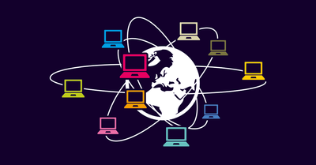

Réseau Network:
Ensemble d’ordinateurs et de terminaux autonomes connectés entre eux et qui sont situés dans
un certain domaine géographique, pour échanger des informations numériques, selon des règles
bien définies.

Mise en réseau :
Mise en œuvre des outils et des tâches permettant de relier des ordinateurs
afin qu’ils puissent partager des ressources.
Un réseau désigne un ensemble d’équipements interconnectés pour permettre la
communication de données entre applications, quelles que soient les distances qui les séparent.
Evolution :
Les Réseaux informatiques sont nés du besoin de faire communiquer des terminaux
distants avec un site central puis des ordinateurs entre eux.
Un réseau s’appuie sur deux notions fondamentales:
- L’interconnexion : qui assure la transmission des données d’un nœud à un autre.
- La communication : qui permet l’échange des données entre processus.
Les caractéristiques de base d’un réseau sont:
- La topologie qui définit l’architecture d’un réseau : On distingue la topologie physique qui définit
la manière dont les équipements sont interconnectés entre eux.
- La topologie logique qui précise la manière dont les équipements communiquent entre eux.
- Le débit exprimé en bits/s qui mesure une quantité de données numériques transmises par
seconde.
Quelques terminologies en réseau:
- Station de travail : une machine capable d’envoyer des donnéesvers les réseaux .
- Neoud:peut être une station de travail, une
imprimante, un serveur ou toute entité pouvant être adressée par un numéro unique.
- Paquet :C’est la plus petite unité d’information pouvant être envoyé sur le réseau.
Un paquet contient en général l’adresse de l’émetteur, l’adresse du récepteur et les données à
transmettre.
-
Les réseaux peuvent être homogènes, où tous les ordinateurs sont du même constructeur ou hétérogènes, où les ordinateurs sont divers constructeurs.
Éléments d'un reseau:
Les éléments d'un réseau comprennent les ordinateurs équipés d'une carte de
communication, les logiciels de navigateur et de messagerie, les supports du LAN tels que
les câbles et les équipements d'interconnexion tels que les concentrateurs.
Classification des réseaux:
Je peux également ajouter que les réseaux peuvent être câblés (Réseaux filaires) et sans fil
(Réseaux sans fils) et on peut les classifier en fonction de différents critères
1. Par portée l’envergure (La distance) comme :
- LAN (Local Area Network = réseau local d'entreprise).
- MAN (Métropolitan Area Network = Réseau métropolitain ou urbain).
- WAN (Wide Area Network = réseau grande distance).
2. L’ouverture (leur utilisation):
- Intranet (privés internes).
- Extranet (privés internes et externes).
- Internet Les réseaux publics (réseau des réseaux), nationaux ou internationaux
interconnectés à l’échelle de la planète.
- Réseaux filaires : on distingue des réseaux qui Utilisent Le câble coaxial, Le câble en
paires torsadées, fibre optique, Les lignes téléphoniques, (Réseau Téléphonique
Commuté).
- Réseaux sans fils: elles fondent sur d’autres moyennes comme Les ondes radios ,Les
ondes infrarouges, Les satellites et Le Bluetooth…
Le type de topologie:
- Les réseaux en bus :Les machines sont reliées par un câble
coaxial (le bus), et chaque ordinateur est connecté en série sur le bus par l'intermédiaire
de connecteurs BNC.
- Les réseaux en étoile: Toutes les stations sont connectées à un commutateur, . SWITCH : Les
stations émettent vers ce concentrateur qui renvoie les données vers tous les autres ports
réseaux ou uniquement au destinataire.
- Les réseaux en anneau: Les ordinateurs sont situés sur une boucle et communiquent chacun à
leur tour. Elle utilise la méthode d'accès à "jeton" .
Les données transitent de stations en stations en suivant l'anneau qui chaque fois régénèrent le
signal. Le jeton détermine quelle station peut émettre, il est transféré à tour de rôle vers station
suivante.
- Maillée:C'est une structure réseau hybride reprenant un
câblage en étoile regroupant différents nœuds de réseaux.